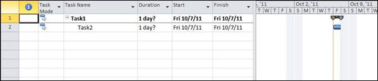

To make a task as the summary task, you need to make use of the IsSummary property of the Task class.
The following example illustrates making a task as Summary task.
|
[C#] Task task1 = new Task("Main Task"); task1.Start = DateTime.Now; task1.Finish = DateTime.Now; task1.IsSummary = true; |
|
[VB]
Dim task1 As Task = New Task("Main Task") task1.Start = DateTime.Now task1.Finish = DateTime.Now task1.IsSummary = True |
The summary task created using the above code will look like as shown below when viewed in Microsoft Project.

Figure 8: Summary Task Created